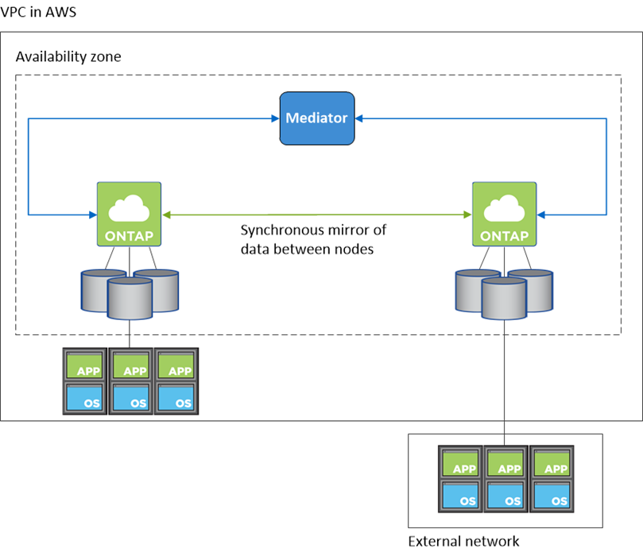

Release notes
Release notes
High-availability pairs in AWS
 Suggest changes
Suggest changes
A Cloud Volumes ONTAP high availability (HA) configuration provides nondisruptive operations and fault tolerance. In AWS, data is synchronously mirrored between the two nodes.
HA components
In AWS, Cloud Volumes ONTAP HA configurations include the following components:
-
Two Cloud Volumes ONTAP nodes whose data is synchronously mirrored between each other.
-
A mediator instance that provides a communication channel between the nodes to assist in storage takeover and giveback processes.
Mediator
Here are some key details about the mediator instance in AWS:
- Instance type
-
t2-micro
- Disks
-
One EBS magnetic disk that is approximately 8 GiB.
- Operating system
-
Debian 11

For Cloud Volumes ONTAP 9.10.0 and earlier, Debian 10 was installed on the mediator. - Upgrades
-
When you upgrade Cloud Volumes ONTAP, BlueXP also updates the mediator instance as needed.
- Access to the instance
-
When you create a Cloud Volumes ONTAP HA pair from BlueXP, you’re prompted to provide a key pair for the mediator instance. You can use that key pair for SSH access using the
adminuser. - Third-party agents
-
Third-party agents or VM extensions are not supported on the mediator instance.
Storage takeover and giveback
If a node goes down, the other node can serve data for its partner to provide continued data service. Clients can access the same data from the partner node because the data was synchronously mirrored to the partner.
After the node reboots, the partner must resync data before it can return the storage. The time that it takes to resync data depends on how much data was changed while the node was down.
Storage takeover, resync, and giveback are all automatic by default. No user action is required.
RPO and RTO
An HA configuration maintains high availability of your data as follows:
-
The recovery point objective (RPO) is 0 seconds.
Your data is transactionally consistent with no data loss. -
The recovery time objective (RTO) is 120 seconds.
In the event of an outage, data should be available in 120 seconds or less.
HA deployment models
You can ensure the high availability of your data by deploying an HA configuration across multiple Availability Zones (AZs) or in a single AZ. You should review more details about each configuration to choose which best fits your needs.
Multiple Availability Zones
Deploying an HA configuration in multiple Availability Zones (AZs) ensures high availability of your data if a failure occurs with an AZ or an instance that runs a Cloud Volumes ONTAP node. You should understand how NAS IP addresses impact data access and storage failover.
NFS and CIFS data access
When an HA configuration is spread across multiple Availability Zones, floating IP addresses enable NAS client access. The floating IP addresses, which must be outside of the CIDR blocks for all VPCs in the region, can migrate between nodes when failures occur. They aren’t natively accessible to clients that are outside of the VPC, unless you set up an AWS transit gateway.
If you can’t set up a transit gateway, private IP addresses are available for NAS clients that are outside the VPC. However, these IP addresses are static—they can’t failover between nodes.
You should review requirements for floating IP addresses and route tables before you deploy an HA configuration across multiple Availability Zones. You must specify the floating IP addresses when you deploy the configuration. The private IP addresses are automatically created by BlueXP.
For details, see AWS networking requirements for Cloud Volumes ONTAP HA in multiple AZs.
iSCSI data access
Cross-VPC data communication is not an issue since iSCSI does not use floating IP addresses.
Takeover and giveback for iSCSI
For iSCSI, Cloud Volumes ONTAP uses multipath I/O (MPIO) and Asymmetric Logical Unit Access (ALUA) to manage path failover between the active-optimized and non-optimized paths.
|
|
For information about which specific host configurations support ALUA, see the NetApp Interoperability Matrix Tool and the Host Utilities Installation and Setup Guide for your host operating system. |
Takeover and giveback for NAS
When takeover occurs in a NAS configuration using floating IPs, the node’s floating IP address that clients use to access data moves to the other node. The following image depicts storage takeover in a NAS configuration using floating IPs. If node 2 goes down, the floating IP address for node 2 moves to node 1.

NAS data IPs used for external VPC access cannot migrate between nodes if failures occur. If a node goes offline, you must manually remount volumes to clients outside the VPC by using the IP address on the other node.
After the failed node comes back online, remount clients to volumes using the original IP address. This step is needed to avoid transferring unnecessary data between two HA nodes, which can cause significant performance and stability impact.
You can easily identify the correct IP address from BlueXP by selecting the volume and clicking Mount Command.
Single Availability Zone
Deploying an HA configuration in a single Availability Zone (AZ) can ensure high availability of your data if an instance that runs a Cloud Volumes ONTAP node fails. All data is natively accessible from outside of the VPC.
|
|
BlueXP creates an AWS spread placement group and launches the two HA nodes in that placement group. The placement group reduces the risk of simultaneous failures by spreading the instances across distinct underlying hardware. This feature improves redundancy from a compute perspective and not from disk failure perspective. |
Data access
Because this configuration is in a single AZ, it does not require floating IP addresses. You can use the same IP address for data access from within the VPC and from outside the VPC.
The following image shows an HA configuration in a single AZ. Data is accessible from within the VPC and from outside the VPC.

Takeover and giveback
For iSCSI, Cloud Volumes ONTAP uses multipath I/O (MPIO) and Asymmetric Logical Unit Access (ALUA) to manage path failover between the active-optimized and non-optimized paths.
|
|
For information about which specific host configurations support ALUA, see the NetApp Interoperability Matrix Tool and the Host Utilities Installation and Setup Guide for your host operating system. |
For NAS configurations, the data IP addresses can migrate between HA nodes if failures occur. This ensures client access to storage.
How storage works in an HA pair
Unlike an ONTAP cluster, storage in a Cloud Volumes ONTAP HA pair is not shared between nodes. Instead, data is synchronously mirrored between the nodes so that the data is available in the event of failure.
Storage allocation
When you create a new volume and additional disks are required, BlueXP allocates the same number of disks to both nodes, creates a mirrored aggregate, and then creates the new volume. For example, if two disks are required for the volume, BlueXP allocates two disks per node for a total of four disks.
Storage configurations
You can use an HA pair as an active-active configuration, in which both nodes serve data to clients, or as an active-passive configuration, in which the passive node responds to data requests only if it has taken over storage for the active node.
|
|
You can set up an active-active configuration only when using BlueXP in the Storage System View. |
Performance expectations
A Cloud Volumes ONTAP HA configuration synchronously replicates data between nodes, which consumes network bandwidth. As a result, you can expect the following performance in comparison to a single-node Cloud Volumes ONTAP configuration:
-
For HA configurations that serve data from only one node, read performance is comparable to the read performance of a single-node configuration, whereas write performance is lower.
-
For HA configurations that serve data from both nodes, read performance is higher than the read performance of a single-node configuration, and write performance is the same or higher.
For more details about Cloud Volumes ONTAP performance, see Performance.
Client access to storage
Clients should access NFS and CIFS volumes by using the data IP address of the node on which the volume resides. If NAS clients access a volume by using the IP address of the partner node, traffic goes between both nodes, which reduces performance.

|
If you move a volume between nodes in an HA pair, you should remount the volume by using the IP address of the other node. Otherwise, you can experience reduced performance. If clients support NFSv4 referrals or folder redirection for CIFS, you can enable those features on the Cloud Volumes ONTAP systems to avoid remounting the volume. For details, see ONTAP documentation. |
You can easily identify the correct IP address through the Mount Command option under the manage volumes panel in BlueXP.